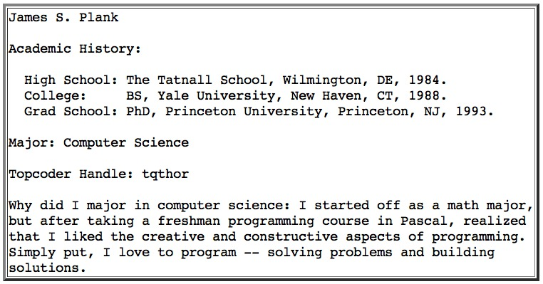

CS140 -- Lab 0
You should go through the Unix tutorial and start learning vi. See
the lecture
notes on Unix, etc for pointers to that material.
For this "lab", your assignment is simple:
Part 0: Accounts
Make sure that you have joined the class' Piazza site. Also make sure that you have
a topcoder account (topcoder.com).
Part 1: Create a private directory for cs140
Log onto a lab machine, and create a directory in your home directory called cs140.
Use lower-case for the "cs". Then protect that directory so that you have read and write access to
it, but no one else does. If that last sentence confuses you, remember to read
the tutorial on chmod which
is part of the lecture notes.
Part 2: Put a picture of yourself in your home directory
I'm sure you have a jpg of a picture of yourself somewhere. Copy it to
your home directory using scp or ftp, or even email and saving. Whatever,
store it in the file me.jpg in your home directory and make sure that it
is readable by the world. I've got mine in my home directory (/home/plank).
Part 3: Create a file called me.txt with some personal information
Use vi to create a text file called me.txt that has the following information:
- Your name
- Your Topcoder username
- Your academic history
- Your major
- Why you are majoring in whatever your major is.
Format it however you want. Create it from scratch, and do not copy it. Below is an
example of mine.

Put this file in the directory cs140 -- this is so that other people cannot
view it.
To submit this lab
We'll be using the submit script to turn in labs this semester. From
the command line, type 140_submit to use the script. It will prompt
you with a few questions (i.e. is this is proper directory, the
number of the lab, and which lab section are you in). The script
tars your current directory and sends it to the TAs for grading.
For this lab, we'll have you submit your cs140 directory. Navigate
to it (cd ~/cs140/), verify that your me.txt is in the folder as
instructed in part 3, and use 140_submit. The TAs will then verify
that your directory and me.jpg have the proper permissions and that
you are on both Piazza and TopCoder.
Note: The submit script tars your entire current directory from
submission. If you use the script from your home directory
(/home/username/), this could potentially be a very large file.
We do not want to see this happen, and you will be docked
points for improper file submission if this happens.